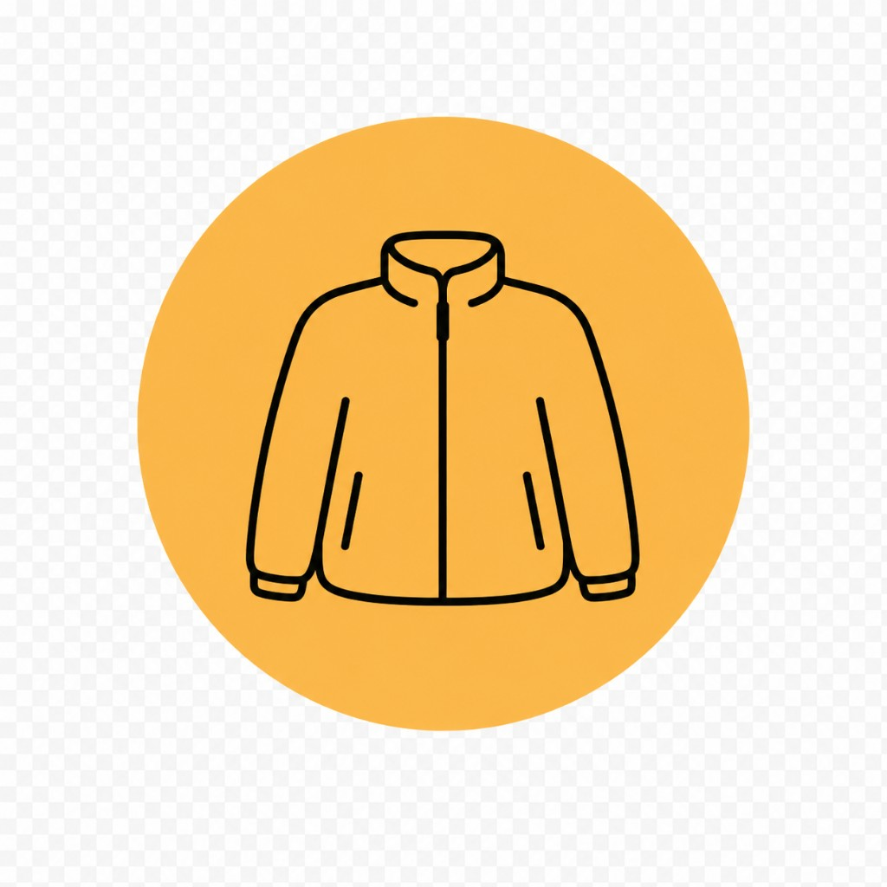
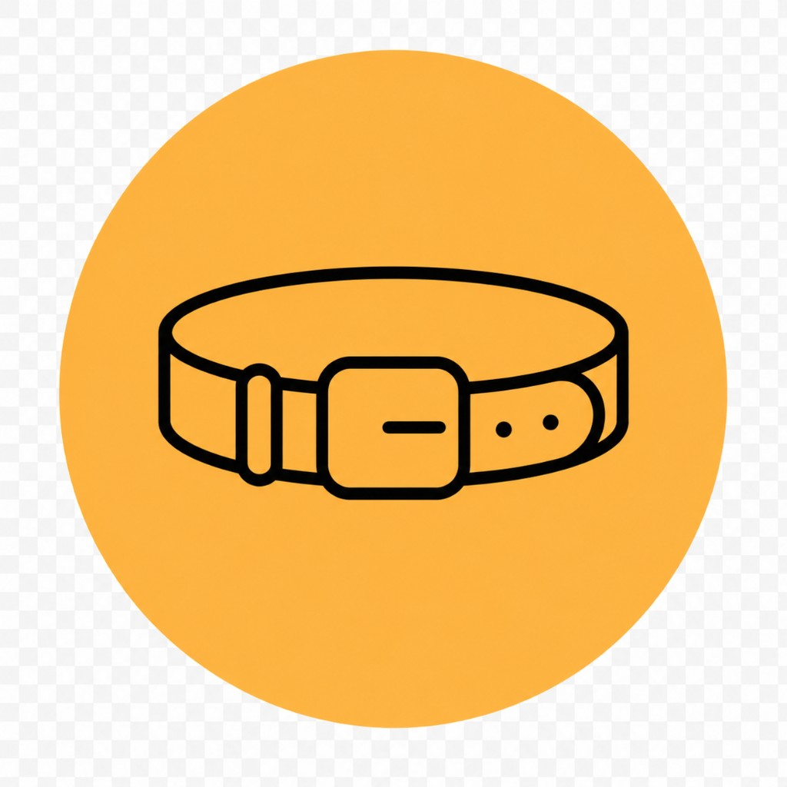

① Filter the thing you’re hunting
Street Style behaves like everyone’s favorite oopbuy.com-style finds index should: pick a lane, sort, keyword when you must.
OOPBuy Spreadsheet Database
If you searched for an OOPBuy spreadsheet, this is the workflow: browse by lane, validate product signals, copy the exact listing URL, then continue in your checkout portal. oopbuydb.com is for discovery and comparison only.
The goal is simple: reduce noise. Jump straight into a category lane, compare listings side by side, and shortlist links worth checking before purchase.
Shoes, tees, hoodies, bags, electronics and more are separated so you can move quickly without mixed search noise.
Use curated lanes and shortlist logic instead of guessing raw marketplace keywords every session.
Reference photos help with comparison, but final confidence should always come from the latest verifiable QC evidence.
Marketplace URLs can expire or mutate. Reopen the listing before placing any real order.








Jump a category when you already know what lane you want—everything still lands on permalinks you can paste at checkout.
We focus on three habits that reduce bad purchases: compare image signals, verify listing freshness, and keep category context while filtering.
QC Finder mindset: never trust one image. Visual Search mindset: compare similar listings. Community mindset: use group tips as hints, not guarantees.
Good results come from consistency, not hype. Open fresh links, compare options in one lane, then only move forward with verifiable details.
This site (oopbuydb.com) is informational only. We write the cheat sheet and link the curated catalogue. Charging cards, warehousing stock, seizure math, tariffs, refunds, and courier labels belong to your oopbuy.com account—we never touch carts or balances on this hostname.
A fat link index (Sheet-shaped or close) for Taobao, Weidian, and 1688—photos, batch nicknames, rough USD. Nothing charges inside the browse layer; paste the SKU URL into your checkout platform.
Usually yes for most shoppers outside mainland China. Marketplaces often require local payment rails, so users typically complete payment, warehousing, QC handling, and shipping from a dedicated checkout platform.
No storefront lives here. Payment and warehousing happen on your checkout platform after you paste; oopbuydb.com only routes readers to browse and jargon.
No. That’s Discord shorthand, not insurance. Listings rewrite themselves weekly. Re-open the SKU the day you pay and trust warehouse photos over hype captions.
Usually. The browse UI is meant to be clicked and filtered like a normal shop. Treat servers as optional noise, not the source of truth.
Because it’s a quick gut-check before freight estimation—landed cost still needs packing, volumetric weight, insurance toggles, FX, and customs paperwork.
Bookmarking the catalogue buys you zero warehouse space. Eventually you paste the listing into oopbuy.com—same place top-ups, storage clocks, QC tickets, and international lines actually live.
Most “oopbuy.com spreadsheet” chatter on Google boils down to the same artifact: crowdsourced Taobao / Weidian / 1688 links dumped into something table-shaped, spiced with slang batch names and screenshots that expired before your coffee cooled.
Useful grids layer filters on top—so you can pivot from runners to hoodie fleece without brute-forcing Chinese search terms. Rows still spoil; screenshots age; permalinks 404 when shops panic-edit SKUs.
You’ll typically see:
Aggregators—and human editors dumping rows into Sheets—digest thousands of storefront permutations so you inherit their rabbit holes. That playbook sits next to the official oopbuy.com storefront in search, and beside browse layers such as Street Style that turn the torrent into clickable filters.
Good UI keeps titles, price columns, and thumbnail strips aligned so you’re not horizontal-scrolling a broken CSV. Goal stays simple: copy the deep link; oopbuy.com buys domestic and their shed camera settles arguments.
Even imperfect curation beats guessing Chinese keywords, fighting CAPTCHAs, and wondering if a shop is empty—or if translation failed you again. Rows point at SKUs; you verify; paste authorizes oopbuy.com to pay domestically.
Workflow is numbingly repeatable once you’ve done it twice: browse → sanity-check SKU → paste → stare at QC → ship. Nitty policy stuff (storage clocks, seizure letters, volumetric revenge) stays in our Guides.
Rough checklist:
Street Style behaves like everyone’s favorite oopbuy.com-style finds index should: pick a lane, sort, keyword when you must.
Confirm variants, sizing charts, and seller notes on the marketplace page itself. Weird shipping clauses hide there.
Grab the SKU-level permalink oopbuy.com’s parser prefers. Fancy campaign shells love to crater mid-transfer.
Paste SKUs into oopbuy.com at oopbuy.com—that’s where Taobao / Weidian / 1688 permalinks settle, warehouse photos attach, and export lines get quoted.
Once QC matches what you think you bought, declare accurately, insure if you’d cry over the loss, and accept that volumetric boxes lie.
Air lines ghost-scan for days. Only panic if timelines blow past what's normal for the carrier slug you clicked.
Reminder: Rows in the catalogue don’t move inventory. Paste into oopbuy.com when you fund the haul—that’s where warehouse photos and courier tickets attach.
Reload before you recharge. Rows shuffle; yuan wiggles; oopbuy.com’s volumetric math still wakes up thirsty.
Think of oopbuydb.com as the sticky note—not the warehouse. We round up jargon, etiquette, and where to browse; spreadsheets and grids hand you screenshots; customs, QC, refunds, and lines still unwind on oopbuy.com proper.
We’re not the store. Payments and disputes route through oopbuy.com at oopbuy.com after you paste the link—with all the boredom and dread that entails.